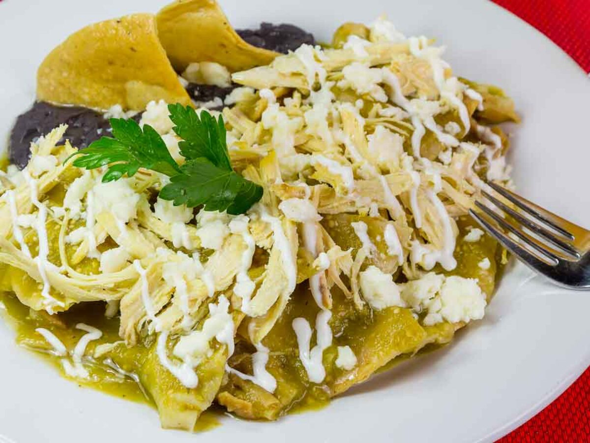

Chilaquiles

Description
Chilaquiles are a traditional Mexican breakfast dish consisting of corn tortillas cut into quarters and lightly fried.
Typically, corn tortillas cut into quarters and lightly fried are the basis of the dish. Green or red salsa is poured over the crisp tortilla triangles. Pulled chicken is sometimes added to the mix. It is commonly garnished with cream, cheese, onion, and avocado slices.
Ingredients
- garlic
- serrano peppers
- small green tomatos
- corn tortilla chips
- shredded chicken meat
- cilantro
- sour cream
- cotija cheese
- onion
- avocado
Steps
- Cook the garlic, serrano peppers and tomatoes.
- Put the cooked ingredients with some water in a blender and blend until smooth.
- Fry the tortilla chips.
- Soak the fried tortilla chips in the sauce.
- Put the chilaquiles in a dish, add shredded chicken, and top them with cream, avocado slices, cheese and onion.